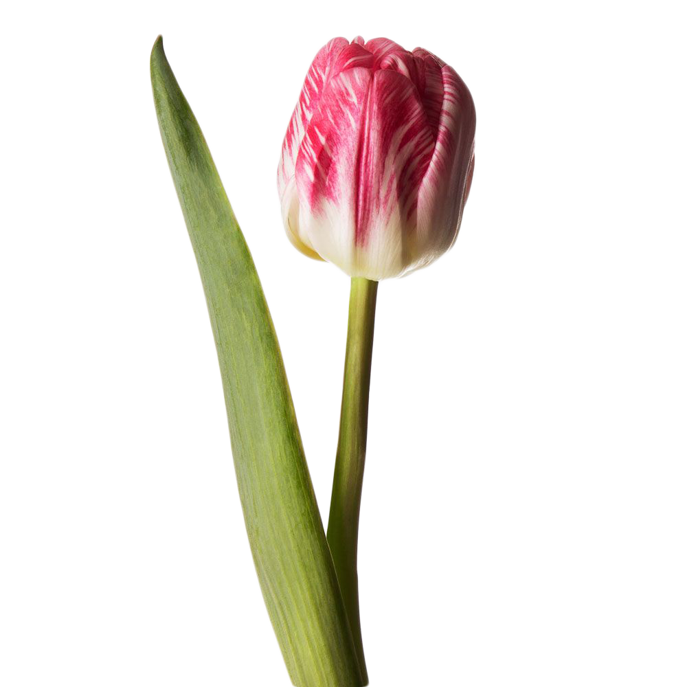
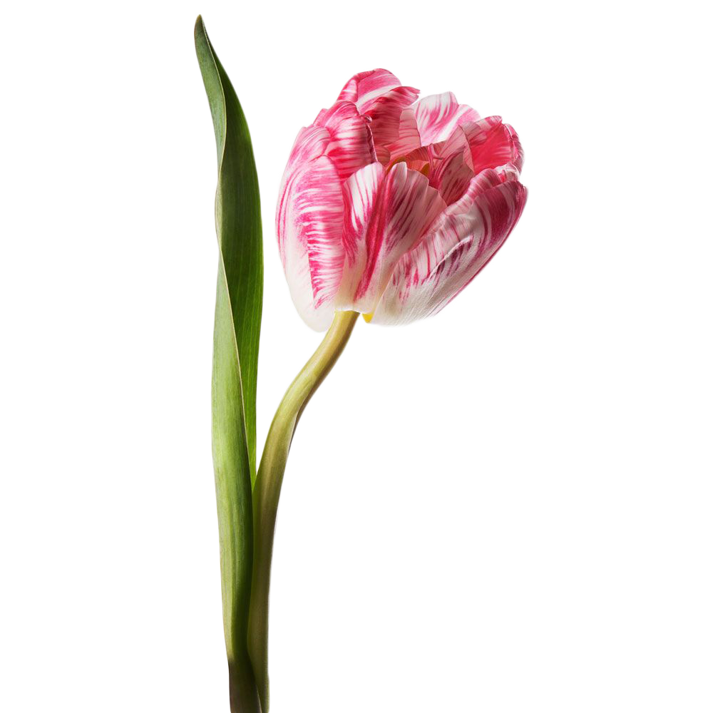
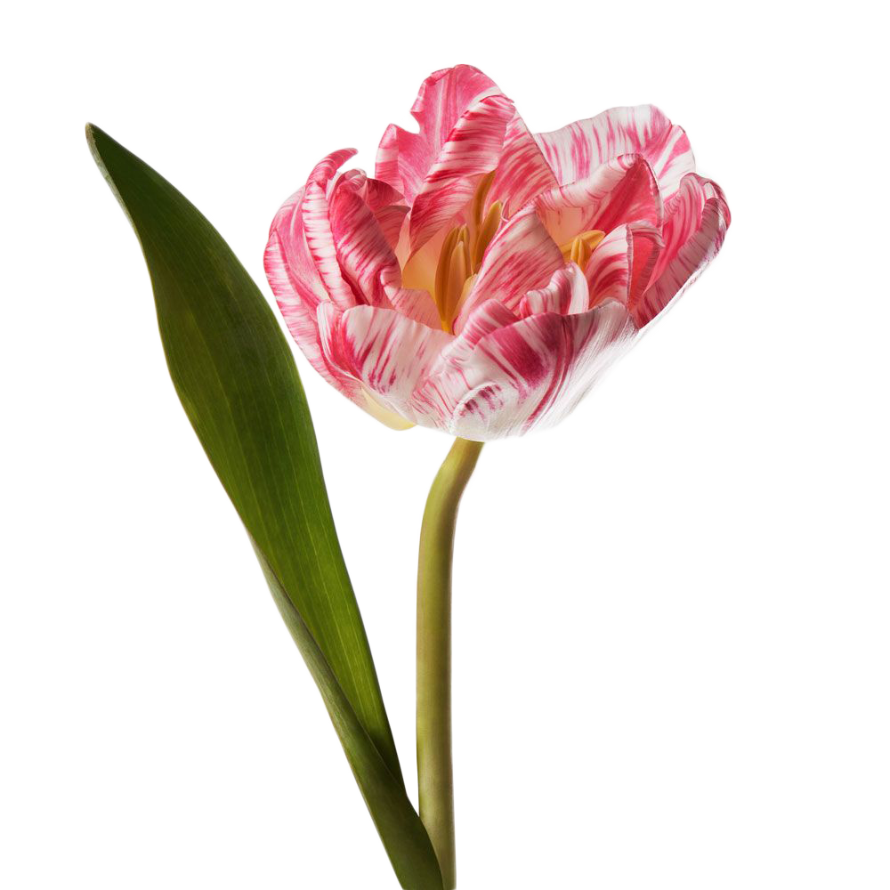
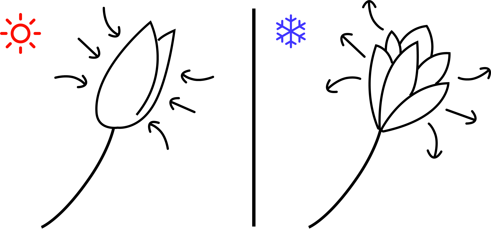

follor
로그인

튤립
프린세스
사진저장

안녕 프린세스!
어쩜 이렇게 이쁠까요!
프린세스 튤립은 아담한 얼굴에 얼룩말 무늬처럼 입혀진
흰색과 분홍색이 참 매력적인 아이에요. 프린세스 튤립은
추위에 강한 튼튼한 아이라서 이른 겨울부터 늦은 봄까지
만나볼 수 있답니다.
11월부터 2월 사이에
볼 수 있어요.
분홍 + 흰
같은 색 꽃 보러가기 >
활짝 핀 프린세스!


튤립은 온도에 따라 반응해요!
서늘하면 오므리고, 따뜻하면 활짝 핀답니다.
하지만! 흙이 아닌 물에 꽂아 놓은 튤립은 햇빛에 약하답니다.
활짝 핀 꽃을 보고 싶으시다면 햇빛이 들지 않는 따뜻한 곳에 놔둬주세요!